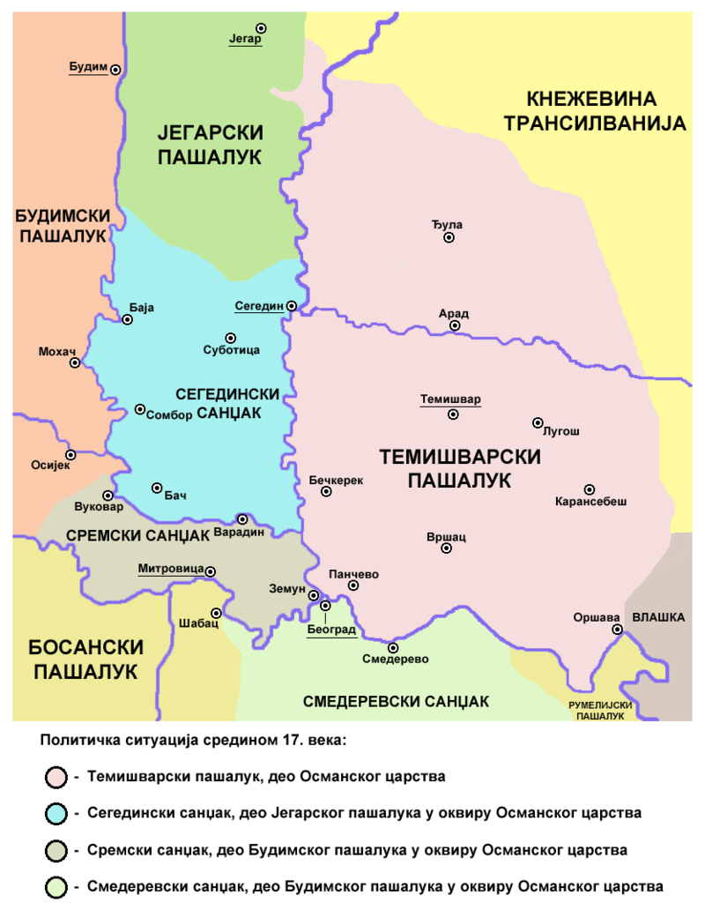

Početna
Kako do Vršac?
Znamenitosti
Atrakcije
Utisci posetilaca
Istorija grada Vršca
Poznate ličnosti iz Vršca
Jovan Sterija Popović — književnik i komediograf
Paja Jovanović — slikar
Jaša Tomić — novinar, političar i književnik
Bora Kostić — šahista
Dragiša Brašovan — arhitekta
Poznate ličnosti iz Vršca
Feliks Mileker — osnivač i kustos Gradskog muzeja
Rada Đuričin — glumica
Judita Kofman — matematičarka
Laza Nančić — socijalista, novinar, pisac i osnivač Vršačke čitaonice

×
Srpski jezik
Engleski